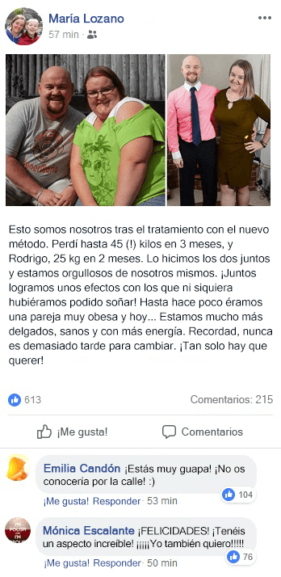

María y Rodrigo son la prueba de que se puede perder peso incluso con un sobrepeso avanzado. Su asombrosa metamorfosis ha hecho que miles de españoles quieran deshacerse de los kilos de más de una forma tan rápida y espectacular como lo han hecho ellos. Hoy revelan cómo lo han hecho.
Tanto él como ella tenían un considerable problema de sobrepeso. Sin embargo, bastó una decisión y la ayuda de un innovador tratamiento de pérdida de peso y ni rastro de los kilos de más. El dicho "querer es poder", aunque suene trivial, les ha funcionado al cien por cien.
La historia de María:
- Quiero mucho a mis dos hombres, el grande y el pequeño. Pero durante algún tiempo no fui tan buena esposa y madre como hubiera querido. Porque no estaba contenta con mi aspecto. – cuenta María. - En vez de pasar tiempo con mi familia, me paraba frente al espejo y miraba mi grasa con asco. Un día, asqueada, le hice una pregunta a mi reflejo: ¿Vas a seguir teniendo siempre este aspecto o vas a hacer algo para cambiarlo?
La historia de Rodrigo:
- Realmente no llevaba demasiado mal mi sobrepeso. Siempre me ha gustado comer y mi esposa me quería tal como era. Aunque cuando ella decidió hacer algo con su silueta, le dije que quería estar con ella esta vez, después de todo, somos un todo y debemos apoyarnos mutuamente. Le dije que como ella se había decidido, yo también perdería peso. Mi prioridad era la barriga cervecera - recuerda Rodrigo.
20 de mayo - el día que cambió mi vida
Fue entonces, tras 6 meses de infructuosos intentos para perder peso, cuando nos enteramos de que había aparecido un nuevo método en España, que aceleraba el triple el metabolismo y quemaba hasta 1.000 - 1.400 calorías al día, sin dietas restrictivas ni ejercicio intensivo.
- Durante 6 meses tratamos de luchar contra nuestras debilidades e introdujimos muchos cambios en nuestras vidas. Empezamos a salir a pasear y a utilizar diversos métodos, como pastillas para perder peso, batidos especiales y dietas. Por desgracia, incluso si lograba perder algunos kilos, volvían poco tiempo después. Y así una y otra vez. – dice María. - Estos fracasos nos impulsaron a comer más y bueno, el peso siguió aumentando...
- ¡Lástima no haber conocido antes las gotas Fortunella! Esto nos habría ahorrado mucho estrés y frustraciones, al comprobar que otra "dieta milagro" no había funcionado. - añade Rodrigo.
Adelgazaron de un día para otro
Después de 3 meses María y Rodrigo publicaron un post en Facebook, den el que presentaban sus esbeltas siluetas. Bajo la fotografía pusieron una conmovedora descripción.
Tanto en el caso de María como de Rodrigo, el nuevo método funcionó de forma muy similar. Su metabolismo se aceleró significativamente tras pocos días, lo que les permitió notar tras tan solo una semana los primeros cambios en su aspecto. La cintura y las caderas María habían perdido centímetros, mientras que la "barriga cervecera" de Rodrigo se reducía.
De un día para otro ambos se sentían más ligeros y el problema de picar entre las comidas desapareció María nunca ocultó cuál era su mayor problema: no podían frenar su apetito desenfrenado. María se avergüenza de ello, pero era capaz de comer 3 opulentas comidas al día. Pero con las gotas Fortunella esto cambió.
- Es increíble, pero prácticamente no sentíamos hambre. Sabemos que hay que comer, pero para nosotros era comer prácticamente sin parar. Ahora, mucho tiempo después del desayuno, el almuerzo o la cena, nos sentimos llenos. Lo que más me sorprendió fue que mi marido gritaba al ver su cerveza favorita", se ríe María.
¿Cómo funcionan las gotas Fortunella?
El método con el que María y Rodrigo lograron perder hasta 70 kilogramos juntos resultó ser la fórmula desarrollada en Francia gotas Fortunella. Los ingredientes activos del producto desde el mismo momento en que se consume,comienzan a impulsar los procesos metabólicos. Especialmente importante es el momento en el que se activa la enzima LPL, que estimula el organismo la oxidación de los ácidos grasos, un principio similar al de una pequeña "central eléctrica". Como resultado, los ácidos grasos almacenados se convierten rápidamente en energía y se reduce la sensación de hambre.
El uso de las gotas Fortunella hizo que tanto María como Rodrigo quemaran la grasa sin esfuerzo y el temido efecto YO-YO no apareciera hasta el día de hoy.
¿Dónde se pueden comprar las gotas adelgazantes Fortunella?
El secreto de la eficacia de este método radica en los componentes activos del producto que permiten oxidar la grasa directamente en la sangre, las 24 horas del día. Gracias a ello, alcanzan un efecto visible y duradero incluso las zonas más "resistentes" del cuerpo.
En el mercado español hay muchos productos similares a la fórmula francesa, pero la principal diferencia radica en la estructura del producto y en la concentración de sustancias activas. Los ingredientes activos de las gotas Fortunella liberan de forma uniforme aceleran el metabolismo y obligan al organismo a deshacerse de la grasa. Fortunella consta además de ingredientes de más alta calidad obtenidos en un proceso de producción avanzado, por lo que solo se obtienen los mejores resultados utilizando sólo el producto original.
En lo que respecta a nuestro artículo editorial, es posible comprar las gotas Fortunella con un descuento destinado a nuestros lectores.
Haz clic aquí para recibir Fortunella >>>
Commentarios
El cambio increíble de María y Rodrigo
¿alguien las ha utilizado?
si alguien me dijera que han adelgazado gracias a unas gotas, me creería que era una broma, mientras tanto 10 kilos menos y siguen delgados:D
¡¡¡Guau, estoy impresionada!!! Me gustaría adelgazar así...
¿y con problemas de tiroides? ¿se puede utilizar?
sin problemas, no tienes de que preocuparte
Yo no me creo esas cosas. Es mejor ponerse manos a la obra y cuidar tu misma de tu silueta.
¡¡¡estoy impresionada con vuestro cambio!!! Yo también sueño con adelgazar así...
Las tomé durante 2 meses y perdí hasta 25 kilos. Confirmo todo lo escrito en este artículo
Yo me las compré hace un mes y ya llevo 12 kg menos y ahora se las he comprado a mi madre, veremos como les va.
María y Rodrigo mi pareja favorita, felicidades
¡¡¡cuidado con las falsificaciones!!! Yo misma me he dejado engañar
¿alguien a probado alguna dieta de eliminación?
¿para la barriga cervecera también? La de mi marido es mucho más grande que la de Rodrigo...
yo gracias a Fortunella me perdido exactamente lo que quería, es decir, 6 kg
los efectos pueden verse muy rápidamente, este es, en mi opinión, el mejor método.
¿dónde se puede pedir?
¡hay que entender lo que se lee! debajo del artículo tienes el enlace a la página
Después del embarazo engordé 20 kg y no pude perderlos durante mucho tiempo. Estaba destrozada pero Fortunella me ayudó mucho, las tomé 2 meses y se perdí 18 kg.
mi mujer lo ha usado y ahora tiene una figura mejor que cuando era joven
sólo las gotas Fortunella han sido capaces de cambiar mis hábitos alimenticios y quemar grasa de forma efectiva. Es mi producto favorito
llevo 3 semanas tomándolo y estoy en shock. ¡ya he perdido más de 7 kg!
¿el precio de este milagro?
lo empecé a tomar antes de navidad y he adelgazado mucho. el peso lo mantengo así que perfecto.
lo recomiendo